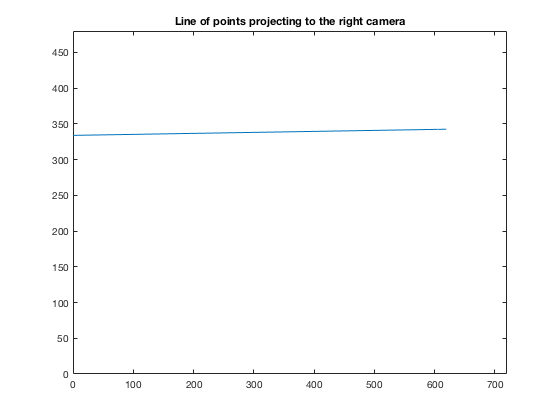

psi = [400,0,360;0,-400,240;0,0,1];
pL = [16.595;-15.538;63.748];
rL = psi * pL;
pW = [33.1;-39.1;38.5];
scale_vec = [0.5:0.5:100];
pL_vec = pL .* scale_vec;
R_WL = [0.913545457642601,-0.063627629171822,0.401729040058774;0.287606238475951,0.799453749866612,-0.527405302792764;-0.287606238475951,0.597348496800808,0.748637044875238];
R_WR = [0.994521895368273,-0.016351854232753,0.103241544429788;0.073912785203567,0.808411029059454,-0.583959337863936;-0.073912785203567,0.588391217607967,0.805191079946410];
T_WL = [-8.659258262890683;2.169872981077807;4.830127018922193];
T_WR = [10.659258262890683;5.830127018922193;1.169872981077807];
G_WL = [R_WL, T_WL;0,0,0,1];
G_WR = [R_WR, T_WR;0,0,0,1];
G_RL = inv(G_WR) * G_WL;
l_vec = [0:.1:1000];
for i = 1:size(l_vec,2)
rR(:,i) = [psi,zeros(3,1)] * G_RL * [pL .* l_vec(i) ;1];
end
rR = rR ./ rR(3,:);
figure(1);
plot(rR(1,:),rR(2,:));
axis([0,720,0,480]);
title('Line of points projecting to the right camera');
